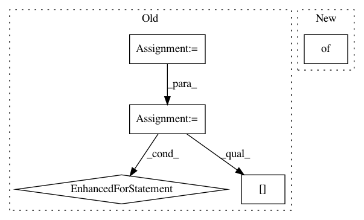

9823e740107faa92d200f4eee269bda3fb2b699b,softlearning/replay_pools/flexible_replay_pool.py,FlexibleReplayPool,__init__,#FlexibleReplayPool#Any#Any#,10
Before Change
self.fields = fields
self.field_names = list(fields.keys())
for field_name, field_attrs in fields.items():
field_shape = [max_size] + list(field_attrs["shape"])
setattr(self, field_name, np.zeros(field_shape))
self._pointer = 0
self._size = 0
@property
After Change
max_size = int(max_size)
self._max_size = max_size
self.fields = {}
self.field_names = []
self.add_fields(fields)
self._pointer = 0
In pattern: SUPERPATTERN
Frequency: 3
Non-data size: 5
Instances
Project Name: rail-berkeley/softlearning
Commit Name: 9823e740107faa92d200f4eee269bda3fb2b699b
Time: 2018-06-30
Author: kristian.hartikainen@gmail.com
File Name: softlearning/replay_pools/flexible_replay_pool.py
Class Name: FlexibleReplayPool
Method Name: __init__
Project Name: rail-berkeley/softlearning
Commit Name: 9634be247a33280cfc60b439e6cb61147bd79f56
Time: 2018-01-29
Author: haarnoja@berkeley.edu
File Name: softqlearning/misc/sampler.py
Class Name:
Method Name: rollout
Project Name: rail-berkeley/softlearning
Commit Name: a55f9be217b2320cec7c7dc44a8245496f851af5
Time: 2019-06-01
Author: hartikainen@berkeley.edu
File Name: softlearning/misc/utils.py
Class Name:
Method Name: save_video